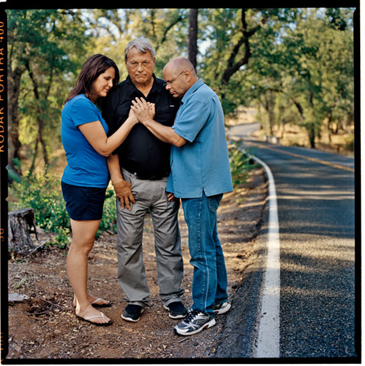
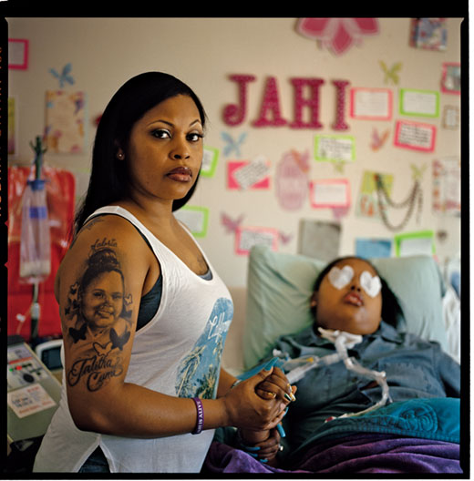
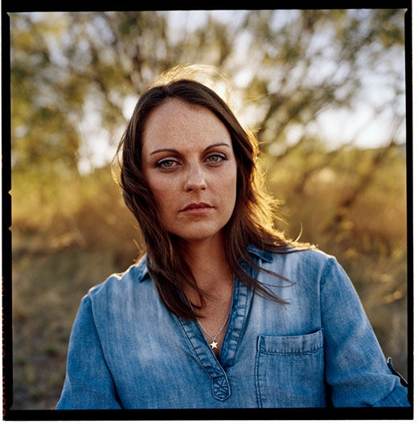
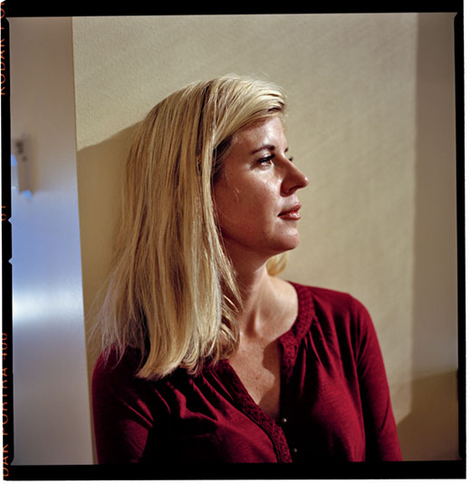
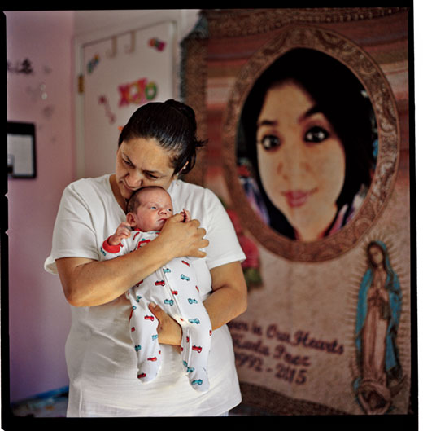
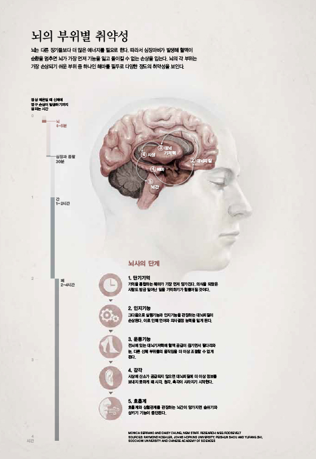

생사의 경계를 넘어
글 : 로빈 마란츠 헤니그
사진 : 린 존슨
-

걸음마가 서툰 가델 마틴은 2015년 3월 얼음처럼 차가운 시냇물에 빠진 후 1시간 30분 넘게 죽은 상태로 있었다. 가델은 사흘 반나절 만에 건강한 모습으로 퇴원했다. 이 아이의 사연은 과학자들로 하여금 죽음의 의미가 과연 무엇인지 묻게 만드는 수많은 이야기들 중 하나다.
-

미국 애리조나 주를 근거지로 하는 냉동보존 전문기업 앨코어의 공동 창업주 린다 체임벌린이 남편 프레드의 시신이 냉동돼 있는 보관 용기를 끌어안고 있다. 그녀는 언젠가 그가 해동돼 다시 살아날 수 있기를 바란다. 그리고 자신도 때가 되면 냉동돼 남편과 함께할 계획이다. 그녀에 따르면 프레드가 마지막으로 남긴 말은 “이거 참, 효과가 있어야 할 텐데”였다.
-

“ 내 아들은 커다란 영향을 미쳤어요.” 디에나 산타나가 아들 스콧에 대해 말한다. 그는 17살 때 교통사고로 사망했고 76명이 그의 장기와 조직을 이식 받았다. 심장을 이식 받은 로드 그램슨(가운데)이 캘리포니아 주 플레이서빌에 있는 도로 근처에서 디에나와 리치 부부를 만났다. 스콧은 이곳에서 사망했다.
-

“ 의사들의 말을 들었더라면 지금 나는 공동묘지에 묻힌 딸아이를 방문하고 있을 거예요.” 네일라 윙크필드는 말한다. 그녀의 딸 자히 맥매스는 13살 때인 2013년에 뇌사 판정을 받았다. 윙크필드는 딸이 죽지 않았다고 주장한다.
-

애슐리 바넷은 대학생일 때 텍사스 주의 외딴 고속도로에서 심각한 교통사고를 당했다. 골반이 부서졌고 비장이 파열됐으며 피를 심하게 흘렸다. 그녀는 사고 현장에서 자신이 두 세계 사이를 오갔다고 말한다. 한쪽은 구급요원들이 승객 구출용 공구인 ‘조스 오브 라이프’를 휘두르고 있는 혼돈과 고통의 세계였고 다른 한쪽은 하얀 빛이 보이고 고통과 두려움이 없는 세계였다. 몇 년 후 그녀는 암에 걸렸지만 임사체험을 한 덕분에 자신이 살 것이라고 확신했다. 세 자녀를 둔 그녀는 외상 생존자들에게 상담을 해주고 있다.
-

당시 대학생이던 트리시아 바커는 자동차와 정면 충돌하는 바람에 피를 철철 흘리고 척추가 부러진 채 미국 텍사스 주 오스틴의 한 병원으로 이송됐다. 그녀는 수술을 받는 동안 자신이 육신과 분리돼 천장 근처를 떠돌며 모니터에 나타난 일직선 신호를 보고 있는 것을 느꼈다고 한다. 또 병원 복도를 통과하면서 슬픔에 잠긴 의붓아버지가 자판기에서 초콜릿 바를 구입하는 모습을 봤다고 한다. 바커가 자신의 이런 행동이 실제로 일어난 일이라고 믿게 된 이유는 바로 이 세세한 내용, 곧 의붓아버지가 아무에게도 얘기한 적 없는 이 초콜릿 바 이야기 때문이었다. 현재 문예창작과 교수인 바커는 저승에서 자신과 동행했던 영혼들이 여전히 자신을 인도하고 있다고 주장한다.
-

베르타 히메네스는 2015년에 임신한 상태로 뇌사 판정을 받은 딸 칼라 페레스의 사진에 매일같이 말을 건넨다. 의사들은 페레스의 태아였던 에인절이 자랄 수 있도록 54일 동안 페레스의 신체 기능을 유지하려고 고군분투했다. 히메네스 부부는 에인절과 세 살배기 누이인 제네시스를 키우고 있다.
-

뇌의 부위별 취약성
뇌는 다른 장기들보다 더 많은 에너지를 필요로 한다. 따라서 심장마비가 발생해 혈액이 순환을 멈추면 뇌가 가장 먼저 기능을 잃고 돌이킬 수 없는 손상을 입는다. 뇌의 각 부위는 가장 손상되기 쉬운 부위 중 하나인 해마를 필두로 다양한 정도의 취약성을 보인다.